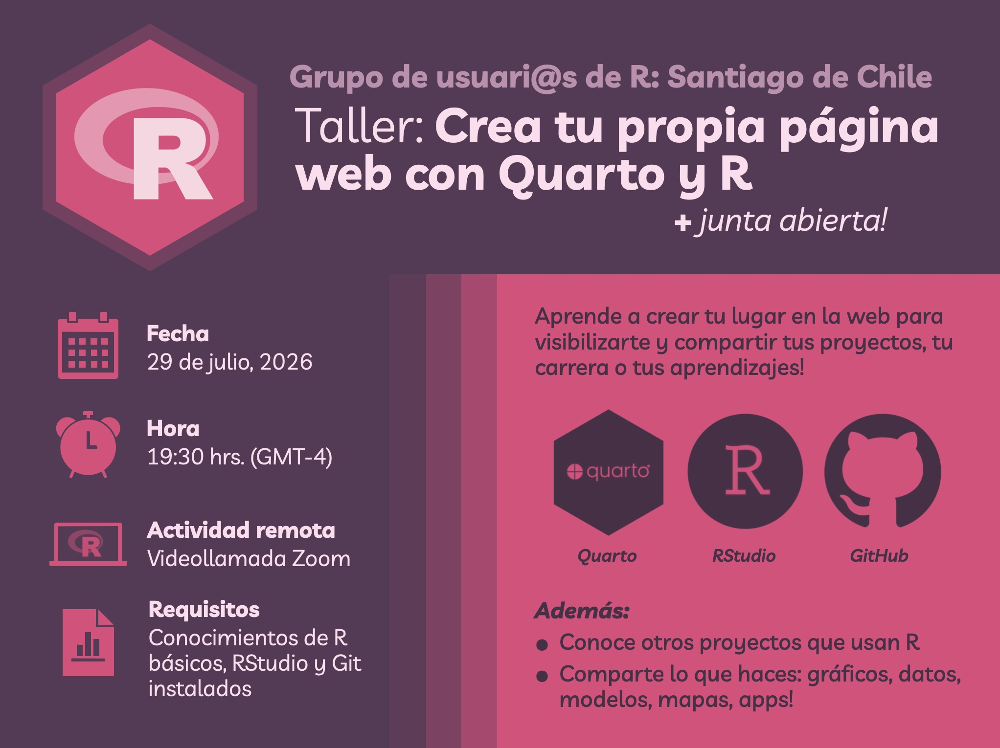

Taller: Crea tu propia página web con Quarto y R
Organizado por el Grupo de Usuari@s de R de Santiago, Chile
Resumen
En esta reunión mensual del grupo de usuari@s de R de Santiago se realizó el taller online: 'Crea tu página web con Quarto y R', para que aprendas a compartir tu trabajo en internet creando y publicando tu propio sitio web desde RStudio. Además habrá espacio para conversar sobre R y compartir lo que estás haciendo con este lenguaje.
Para su reunión mensual del mes de julio, el grupo de usuarias/os de R de Santiago de Chile realizó el taller Crea tu página web con Quarto y R, dictado por Bastián Olea Herrera.

Ya está disponible la grabación del taller!
Durante el taller aprenderás a crear una página web utilizando Quarto, una herramienta sencilla y potente que te permitirá mostrar tu trabajo, proyectos, publicaciones, portafolio y mucho más, y también veremos cómo subir esta página a tu propio sitio gracias a GitHub Pages, para que cualquier persona pueda verla.
Antes de la reunión, asegúrate de tener:
- R y RStudio instalados (ver instrucciones aquí)
- El software Git en tu computador (descargar aquí)
- El paquete de R Quarto instalado:
install.packages("quarto") - Una cuenta de GitHub creada, ya que la utilizaremos para publicar nuestra página web!
Grabación del taller
Nos puedes ayudar difundiendo nuestras actividades en LinkedIn y en Twitter/X
- Fecha de publicación:
- July 29, 2026
- Extensión:
- 1 minute read, 156 words
- Categorías:
- Tutoriales
- Ver también: